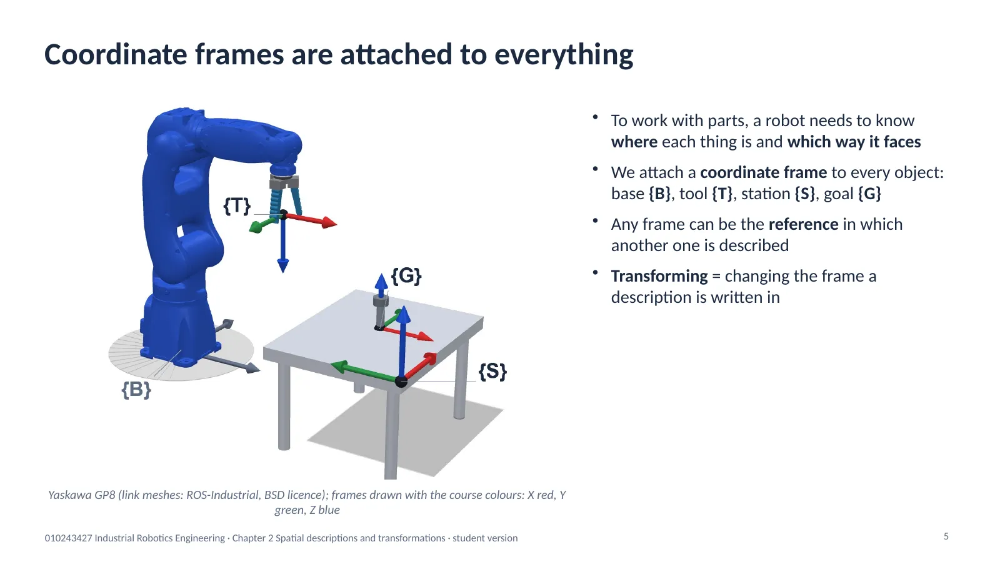
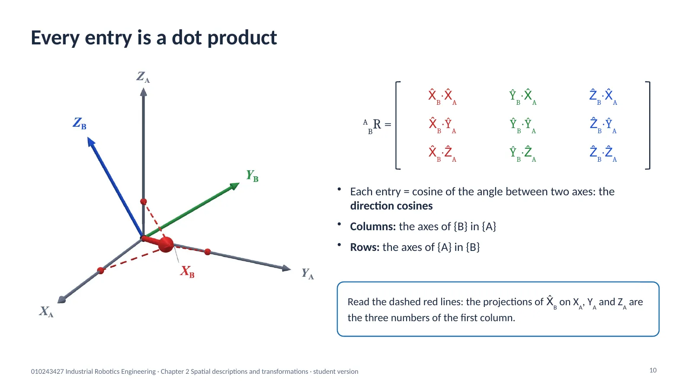
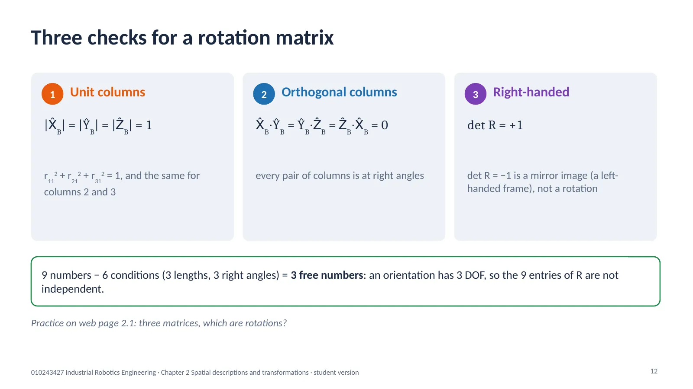
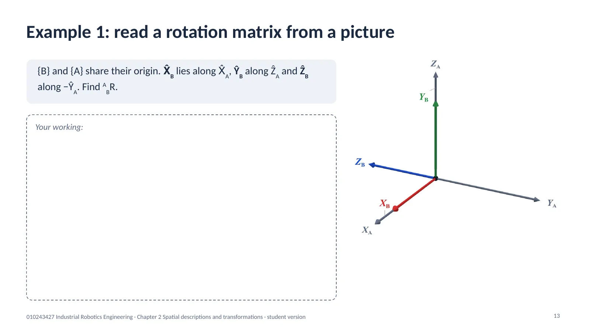
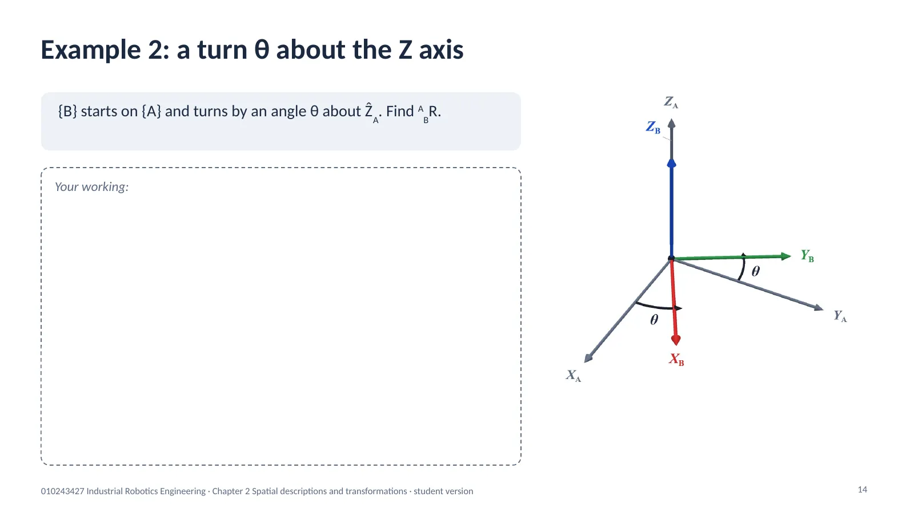
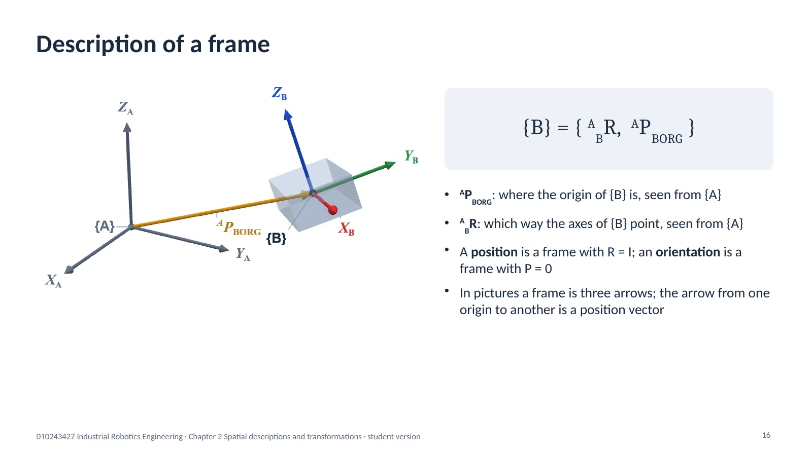

หุ่นยนต์ต้องรู้ว่าชิ้นงาน เครื่องมือ และตัวมันเอง อยู่ที่ไหนและหันไปทางไหน จึงติดเฟรมพิกัดไว้กับทุกสิ่ง ตำแหน่งบอกด้วยเวกเตอร์ การวางตัวบอกด้วยเมทริกซ์การหมุน ซึ่งคือแกนทั้งสามของเฟรมที่หมุนแล้ว เขียนเรียงเป็นคอลัมน์ หน้านี้ครอบคลุมสไลด์หน้า 5–17 (Craig 2.1–2.2) มี เครื่องมือ 2 ชิ้น (A, B) และ 3 โจทย์
A robot must know where parts, tools and its own links are and which way they face, so a coordinate frame is attached to each. A position is a vector; an orientation is a rotation matrix: the three axes of the turned frame written side by side as columns. This page covers slides pp. 5–17 (Craig 2.1–2.2). It has two tools (A, B) and 3 problems.

เฟรมสีเทาคือ {A} ซึ่งอยู่กับที่ เฟรมสีคือ {B} ซึ่งติดกับกล่อง เลื่อนแถบเลื่อนแล้วดู คอลัมน์สีแดงของเมทริกซ์: มันคือส่วนประกอบของลูกศร XB ตามแกน XA, YA, ZA พอดี กดปุ่ม "ภาพฉาย" เพื่อดูเส้นประที่ฉายลูกศรลงบนแกนของ {A} ตัวเลขสามตัวที่เส้นประชี้คือคอลัมน์นั้น
The grey frame is {A}, which stays put; the coloured frame is {B}, fixed to the block. Move the sliders and watch the red column of the matrix: it is exactly the components of the arrow XB along XA, YA, ZA. Press "projection" to see the dashed lines that project the arrow on the axes of {A}: the three numbers they mark are that column.

คอลัมน์ทั้งสามเป็นเวกเตอร์หนึ่งหน่วยที่ตั้งฉากกัน ดังนั้น \(R^T R = I\) หรือ \(R^{-1} = R^T\): การหมุนกลับไม่ต้องคำนวณอะไรเลย แค่สลับแถวกับคอลัมน์ ข้อที่สาม det = +1 แยกการหมุนออกจากภาพสะท้อนในกระจก (เฟรมมือซ้าย) ซึ่งผ่านสองข้อแรกได้แต่ det = −1 เงื่อนไขทั้งหมด 6 ข้อทำให้ตัวเลข 9 ตัวเหลืออิสระเพียง 3 ตัว ตรงกับ 3 องศาอิสระของการวางตัว
The three columns are unit vectors at right angles, so \(R^T R = I\), i.e. \(R^{-1} = R^T\): turning back costs nothing but swapping rows and columns. The third check, det = +1, separates a rotation from a mirror image (a left-handed frame), which passes the first two but has det = −1. The six conditions leave 3 of the 9 numbers free: the 3 DOF of an orientation.



ตัวเลขหกตัวในแถบเลื่อน (ตำแหน่ง 3 การหมุน 3) กำหนดเฟรม {B} ได้ครบ ตรงกับ 6 องศาอิสระของวัตถุแข็งเกร็ง (สไลด์หน้า 6) แต่การบรรยายเฟรมใช้ตัวเลข 12 ตัว: เมทริกซ์ 9 ตัว (มีเงื่อนไข 6 ข้อ) และเวกเตอร์ 3 ตัว ลองเปิด "จุดสามจุด": ระยะระหว่างจุดทั้งสามไม่เปลี่ยนเลยไม่ว่าจะเลื่อนหรือหมุนอย่างไร
The six slider values (3 for position, 3 for the turn) fix frame {B} completely, matching the 6 DOF of a rigid body (slide p. 6). The description itself uses 12 numbers: 9 in the matrix (with 6 conditions) and 3 in the vector. Switch on "three points": the distances between them never change, however you move or turn the frame.